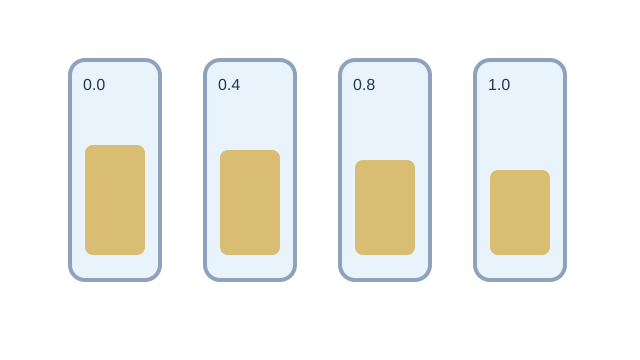

LAUNCH Science · W5L2 · lesson resources
Plan a fair comparison
Choose one shared task or resource within the current lesson stage. Keep the lesson’s 40-minute timetable and 15-minute independent work.
Wednesday route: default cover work is planning and calculation using explicitly supplied sample data. Use a practical only when the equipment, supervision, local risk assessment and soak/measurement handover have already been arranged. Record only practical steps pupils actually complete.
We Do · Plan a fair comparison
Sample data. Calculate signed change, then choose a control.
| Solution | Initial / g | Final / g |
|---|---|---|
| Water | 4.00 | 4.40 |
| 0.4 mol dm⁻³ sucrose | 4.00 | 4.00 |
| 0.8 mol dm⁻³ sucrose | 4.00 | 3.60 |
What should stay the same? What would inconsistent blotting do?
Discuss, point, write or dictate your first reason. Use one example first; extend only if there is time.
Reveal shared reasoning after an attempt
Water: +0.40 g, +10%.
0.4 mol dm⁻³: 0 g, 0%.
0.8 mol dm⁻³: −0.40 g, −10%.
Standardise blotting: surface liquid changes the measured final mass.
This page keeps your writing while it stays open. It does not save or send it.
Model explanation and diagram

Today’s default cover route is planning and sample-data analysis. A full soak, repeated measurements and graph do not fit inside a six-minute shared-task slot.
Watch for: Only record practical completion for pupils who actually carry out the approved practical. Sample data and pre-soaked staff samples are not proof of that completion.
Give a smaller support cue
Change = final mass minus initial mass. Percentage change = change ÷ initial mass × 100. Keep the + or - sign.
Optional video · Osmosis
Watch for: Which substance moves, through what, and in which net direction?
Use a short relevant extract within I Do, then pause for an explanation. The clip replaces part of the modelling time.
Open the freesciencelessons video in a new tab
No-video version · use the same question

Water moves through a partially permeable membrane. Its net movement is from a more dilute solution to a more concentrated solution.
Internet is needed for the optional clip. It is concept teaching; viewing it is not completion of a practical.